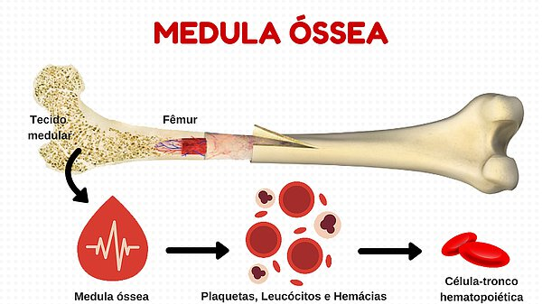
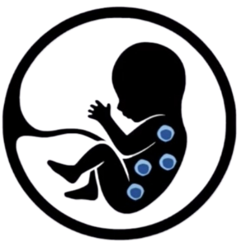
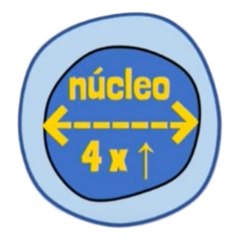
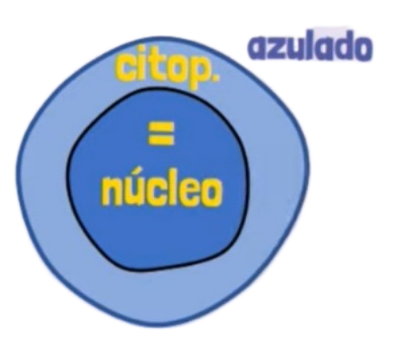
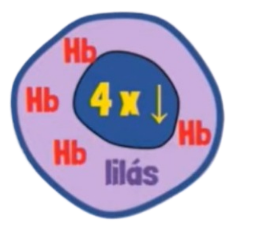
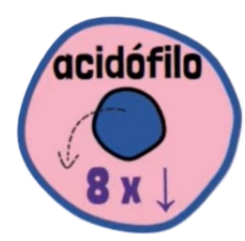
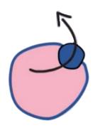

Produção das hemácias
Entendendo sobre o processo
O processo chamado Eritropoiese é o processo de formação e maturação das hemácias. Ele é realizado extravascularmente na medula óssea vermelha, o tecido hematopoiético, através das células tronco hematopoiéticas. Veja sua estrutura na imagem abaixo:
Dentro desse tecido, encontram-se células propulsoras das hemácias, chamadas de eritroblastos que são transformadas em eritrócitos(hemácias)
Como esse processo começa?
A Eritropoese ocorre desde a formação embrionária quando as primeiras células tronco são formadas. Próximo ao nascimento, essas células migram para a medula óssea onde permanecem durante toda a vida.
Alterações Mofológicas
As principais formas de regulação desse processo ocorrem pela ação hormonal da Eritropoetina (sintetizadas pelas células sitentizadoras de eritropoetina nos rins) , Nutrientes como ferro, vitamina B12 e folato. Isso garante mais divisões celulares(Mitoses) e ao final da Eritropoese mais células sanguíneas
A célula tronco no ínicio de sua formação tem o seu núcleo 4x maior que o citoplasma
Depois, a célula diminui de tamanho com o citoplasma de cor azulada e a região do núcleo e citoplasma ficam iguais em relação ao tamanho
Posteriormente, o núcleo da célula tronco fica 4x menor em relação ao citoplasma. Nesse momento a produção de hemoglobina se encontra em quantidade significativa e o citoplasma com uma coloração lilás.
Com o aumento da síntese de hemoglobina a célula, o tamanho fica ainda mais reduzido com o citoplasma acidófilo e o núcleo bem centralizado, condensado e 8x menor comparado ao citoplasma
Agora, ocorre o processo chamado de Extrusão Nuclear que leva á expulsão do núcleo. Isso cessa a produção de RNA na célula e o restante das organelas e móleculas de RNA existirão por volta de mais três dias.
Após todo esse processo, a hemácia preenchida de hemoglibina é liberada no sistema sanguíneo para cumprir suas funções e onde sobreviverá por aproximadamente 120 dias.
É esse o processo de formação das células vermelhas do nosso sangue, inclusive do nosso herói Hemacios